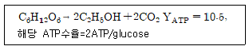
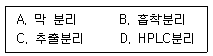

바이오화학제품제조기사 (2004-05-23 기출문제)
1과목: 미생물공학
1. 글루탐산 발효시, 사용균주가 올레산(oleic acid) 영양요구주(auxotroph)일 때, 이 발효에서 탄소원으로 사용할 수 없는 물질은?
- 포도당
- n-파라핀(paraffin)
- 자당(sucrose)
- 사탕수수 당밀액(cane molasses)
(정답률: 알수없음)

2. 다음 중 DNA의 기본 단위인 뉴클레오티드를 구성하는 물질이 아닌 것은?
- 지방산
- 당
- 염기
- 인산
(정답률: 알수없음)
3. 시트르산 (citric acid)의 생산 공정에서 원활한 수율을 얻기 위해 가장 중요한 요건은?
- 산소 공급 차단
- 철 이온 제거
- 중금속이온 첨가
- 저온처리
(정답률: 55%)
4. 포도당을 이용하여 글루콘산을 생산하고자 할 때 관련되지 않는 효소는?
- galactosidase
- catalase
- glucose oxidase
- mutarotase
(정답률: 알수없음)
5. 탄소원과 에너지원으로 유기물을 사용하는 미생물은?
- 화학합성유기종속영양주(chemoorgano heterotroph)
- 화학합성유기영양주(chemoorganotroph)
- 종속영양주(heterotroph)
- 화학합성유기독립영양주(chemoorgano autotroph)
(정답률: 알수없음)
6. Alcohol 발효를 위한 비당화 발효에 사용될 수 있는 기질은?
- 전분(starch)
- cellulose
- 폐당밀
- 밀기울
(정답률: 62%)
7. β -lactam 항생물질인 penicillin에 대한 옳은 설명은?
- Penicillin G는 산(acid)에 불안정하다.
- Ampicillin은 생합성(synthetic) penicillin이다.
- Penicillin V는 반합성(semisynthetic) penicillin이다.
- 현재 임상적으로 많이 사용되는 것은 penicillin X이다.
(정답률: 알수없음)
8. 플라스미드를 함유한 유전자 재조합 미생물에서 각 세대별로 플라스미드 미함유세포가 생길 확률(P)은 0.01이고, 이 때 각 세포의 비성장속도비(α =μ -/μ +)는 1.2이다. 종균주는 1 mL 배양을 이용하여 여러 단계를 거쳐 배양되었으며 각 단계에서의 종균량은 1%로 하였다. 세포가 1 ton 발효조에서 완전히 성장했을 때 플라스미드의 안정성을 몇 % 인가?
- 80%
- 65%
- 55%
- 40%
(정답률: 알수없음)
9. 미생물 배양용 한천배지를 제조할 때 통상적으로 사용하는 한천의 농도로 적당한 것은?
- 0.5%
- 1.5%
- 3.0%
- 5.0%
(정답률: 59%)
10. 곰팡이와 같은 균사체를 형성하는 미생물의 growth curve를 측정하는데 알맞는 방법은?
- 평판배양법
- 탁도측정법
- 균체중량 측정법
- 현미경 검경법
(정답률: 알수없음)
11. 산업적 발효배지내에 불용성 입자가 다수 포함되어 있을 경우 살균조작에 대한 설명으로 맞는 것은?
- 살균온도를 높이고 살균시간을 줄인다.
- 살균온도를 높이고 살균시간을 늘인다.
- 살균온도를 낮추고 살균시간을 줄인다.
- 살균온도를 낮추고 살균시간을 늘인다.
(정답률: 80%)
12. 효모를 이용하여 포도당(C6H12O6)으로부터 에탄올(C2H5OH)을 발효생산하고자 한다. 포도당이 전부 에탄올로 전환된다고 할 때 100g의 포도당으로부터 얻을 수 있는 에탄올의 양은?
- 100g
- 92g
- 51g
- 46g
(정답률: 90%)
13. 다음 중 유산균 발효에 관여하지 않는 균주는?
- 락토바실러스 (Lactobacillus)
- 스트렙토코커스 (Streptococcus)
- 슈도모나스 (Pseudomonas)
- 류코노스톡 (Leuconostoc)
(정답률: 알수없음)
14. 적어도 한 개의 프로브(probe)가 met-ala-cys의 아미노산 배열에 대한 정보를 수록한 세 개의 코돈과 일치하도록 하기 위해서는 몇 개의 다른 이종 혼합 프로브(hybridization probe)를 만들어야 하겠는가? (단, met의 코돈은 AUG, ala의 코돈은 GCU, GCC, GCA 또는 GCG, cys의 코돈은 UGU 또는 UGC이다.)
- 4
- 6
- 7
- 8
(정답률: 47%)
15. 다음 유기산 중에서 에탄올로부터 생산될 수 있는 최종산물은 어느 것인가?
- 글루콘산
- 아이타콘산
- 젖산
- 초산
(정답률: 55%)
16. 방향족 아미노산이 아닌 것은?
- 트립토판 (tryptophan)
- 타이로신 (tyrosine)
- 폐닐알라닌 (phenylalanine)
- 라이신 (lysine)
(정답률: 알수없음)
17. 한 유전자의 중간에 삽입 소자(insertion element)가 첨가되어 형성된 돌연변이주를 야생형(wild type)으로 복귀시키는 2차 돌연변이는?
- 삭제 돌연변이(deletion mutation)
- 삽입 돌연변이(insertion mutation)
- 침묵 돌연변이(silent mutation)
- 무의미 돌연변이(nonsense mutation)
(정답률: 알수없음)
18. 다음 설명 중 연속 배양법의 특징으로 잘못 설명된 것은?
- 장기적 운용이 가능하다.
- 경제적이다.
- 변수 조절이 용이하다.
- 배지의 오염이나 균주 역변이에 취약하다.
(정답률: 알수없음)
19. 활성슬러지(activated sludge)법에 의한 생활하수의 처리에 관련이 없는 미생물은?
- 원생동물
- 곰팡이
- 호기성 박테리아
- 혐기성 박테리아
(정답률: 알수없음)
20. 다음 중 산업효소와 대표적 생산 균주간의 조합이 맞지 않는 것은?
- 알파 아밀레이즈-고초균 (Bacillus subtilis)
- 셀룰레이즈-효모
- 미생물 레넷-뮤코속 진균
- 포도당 이성화효소-방선균
(정답률: 알수없음)
2과목: 배양공학
21. 사상곰팡이의 무성생식의 특징이 아닌 것은?
- 균사(hyphae)
- 포자(spore)
- 버딩(budding)
- 코니디아(conidia)
(정답률: 알수없음)
22. 미생물에 대한 설명 중 맞지 않은 것은?
- 운동성이 있는 미생물은 운동에 필요한 flagella와 cilia를 갖는다.
- 많은 미생물이 세포표면에 다당류로 이루어진 capsule이나 slime을 갖고있다.
- 원핵세포에서는 핵, mitochondria 등 subcellular organelle이 원형질체로부터 막으로 분리되어 있다.
- Mycoplasma를 제외한 많은 세균의 표면에는 결정형의 단백질로 이루어진 S-layer가 있다.
(정답률: 알수없음)
23. 대량으로 동물세포를 배양할 때 어려운 점이 아닌 것은?
- 동물세포는 미생물보다 복잡하고 크다.
- 동물세포는 표면에 붙어서 성장한다.
- 동물세포는 번역후 변형능력이(post-translational modification) 좋다.
- 동물세포는 섬세한 플라즈마 막이 있다.
(정답률: 알수없음)
24. 배지조성은 미생물 균체의 조성에 근거하여 만들어진다. 포도당을 탄소원으로 하여 탄소(C) 함량이 50%인 균체를 30 g/L 생산하려고 하는 경우에 필요한 포도당 공급량은? (단, 균체 1g을 생합성하는데 필요한 에너지량은 2g의 포도당이 완전 산화되어 얻어지는 에너지량과 같다고 가정)
- 약 50 g/L
- 약 100 g/L
- 약 150 g/L
- 약 200 g/L
(정답률: 알수없음)
25. 단백질의 구조에 대한 설명 중 알맞는 것은?
- 1차구조란 아미노산 배열이 규칙적인 나선을 이룬 것을 말한다
- 2차구조란 아미노산 배열이 일정한 이중나선 구조를 이룬 것을 말한다
- 3차구조란 펩티드 사슬이 접혀서 구형 구조를 이룬 것이다
- 4차구조란 3차구조에 1차 구조가 혼합된 것을 말한다.
(정답률: 50%)
26. 화학적 에너지원에 의존하는 미생물은?
- 종속영양균(heterotroph)
- 화학합성 미생물(chemotroph)
- 영양요구주(auxotroph)
- 광합성 미생물(phototroph)
(정답률: 70%)
27. 다음은 동물세포의 배양을 위해 고려해야 할 사항들이다. 옳지 못한 것은?
- 동물세포는 박테리아, 효모, 곰팡이등 보다 증식 속도가 휠씬 느리기 때문에 항생제 사용 뿐만 아니라 미생물의 침입을 막기위한 무균 환경을 유지해야한다.
- 다세포 동물 조직으로부터 떼어낸 세포는 격리된 상태로는 잘 자라지 않기 때문에 Fetal bovine serum과 같은 동물의 혈청을 50%이상 사용하는 것이 상례이다.
- 일반적으로 암세포를 제외한 정상적인 세포에 있어서 평판배양기를 가득 채울 정도로 증식하게 되면 증식이 억제되는 성질이 있으므로 계대배양을 해 주어야한다.
- 동물세포는 세포의 종류에 따라 성장 환경이 다르므로 각 세포의 배양에 적합한 배양액의 성분을 찾아내어 보충해 주어야 한다.
(정답률: 알수없음)
28. 세포막의 지방산 구조에서 외부환경의 변화에 잘 견딜 수 있는 구조는?
- 에테르
- 에스테르
- 디글리세라이드
- 트리글리세라이드
(정답률: 40%)
29. 산소소비속도(OUR)를 측정하여 유지계수(ms)를 무시하고 세포농도를 측정하고자 한다. 곰팡이 배양에서 측정된 산소소비속도가 OUR=0.393gO2/L-h이었고, 비생장속도가 μ=0.15h-1이었으며, 산소에 대한 기질수율이 YX/O2=2.87g/g이었다면, 세포농도(X)는?
- 7.32g/L
- 7.52g/L
- 7.72g/L
- 7.92g/L
(정답률: 64%)
30. S. cerevisiae에 의한 에탄올 발효에 있어서 이론적인 성장수율(YX/S)과 산물수율계수는?

- YX/S = 0.09, YP/S = 0.51
- YX/S = 0.12, YP/S = 0.51
- YX/S = 0.49, YP/S = 0.26
- YX/S = 0.49, YP/S = 0.51
(정답률: 55%)
31. 현미경을 통하여 세포수를 측정하므로 배양된 세포의 밀도를 결정한다. 이 때 세포수를 측정하는데 사용하는 것은?
- 슬라이드 글라스
- 커버 글라스
- 화이브 글라스
- 헤모사이토미터
(정답률: 91%)
32. 킬레이팅제에 대한 설명으로 틀린 것은?
- Mg2+, Fe3+, PO43-같은 불용성 이온들과 결합하여 수용성 화합물을 형성한다.
- -COOH, -NH2, -SH 같은 특정한 리간드를 갖고 있어서 이 부위에 금속이온들이 결합한다.
- 배지에 100mM이상 첨가해야 효과가 있으며, 배양 과정에서 영양원으로 쉽게 이용된다.
- 구연산, EDTA, EGTA, 폴리인산염, 히스티딘, 타이로신, 시스틴이 대표적인 킬레이팅제이다.
(정답률: 알수없음)
33. 대부분의 식물세포의 이차 대사물질이 모이는 세포내 장소는?
- 액포(vacuole)
- cell wall
- chloroplast
- mitochondria
(정답률: 알수없음)
34. 식품을 멸균하고자 한다. 다음중 저온 멸균법과 고온 멸균법중 어느것이 유리한지를 가리기 위해 가장 필요한 정보는 무엇인가?
- 식품의 함수율과 미생물 포자 형성 여부
- 식품에 존재하는 주요 영양성분의 열안정성과 미생물 사멸속도의 온도의존성
- 식품의 열전도도와 미생물의 열전도도
- 식품의 함수율과 미생물의 함수율
(정답률: 알수없음)
35. 해당과정(Glycolysis)과정에서 산화반응이 일어나는 곳은?
- Fructose-6-phosphate → Fructose-1,6-diphosphate
- Fructose-1,6-diphosphate → Dihydroyacetone phosphate + Glyceraldehyde-3-phosphate
- Glyceraldehyde-3-phosphate → 1,3-Diphosphoglycerate
- Phosphoenolpyruvate → Pyruvate
(정답률: 50%)
36. 발효용액의 용존산소를 증가시키기 위해 취할 수 있는 방법이 아닌 것은?
- 발효조내 impeller 회전속도를 증가 시키다.
- 발효조내 걸리는 압력을 증가 시킨다.
- 발효조내 온도를 증가 시킨다.
- 발효조내 배양액의 부피를 감소 시킨다.
(정답률: 59%)
37. 다음중 하이브리도마 세포에 의해 생산된 단일 클론 항체가 갖는 장점이 아닌 것은?
- 동종의 항체를 제한없이 생산할 수 있다.
- 항원에 대한 결합력을 선택할 수 있다.
- 항원에 대한 특이성이 크다.
- 항원의 정제도가 크게 문제되지 않는다.
(정답률: 10%)
38. 배지 제조 및 열멸균(autoclave) 과정에서의 배지 성분의 안전성(stability)에 대한 설명 중 맞지 않는 것은?
- 당(sugar)은 무기염과 같이 열멸균하면 갈변화(browning)현상을 동반할 가능성이 높다.
- 트립토판, 글루타민 같은 아미노산은 열에 약하기때문에 여과멸균이 바람직 하다.
- 암모늄화합물은 열멸균 과정에서 암모니아 가스의 발생이 우려되어 배지를 알칼리성으로 유지해야 한다.
- 수용성 비타민 티아민(thiamine)은 열에 약해서 열멸균 과정에서 잘 분해된다.
(정답률: 70%)
39. 미생물의 성장과 관련 있는 산물의 생산시 비생성속도와 그 예를 든 것은?
- qP = α μ +β , 일차대사물질, 항생물질
- qP = α μ +β , 이차대사물질, 아미노산류
 , 이차대사물질, 항생물질
, 이차대사물질, 항생물질 , 일차대사물질, 본성적 (constitutive)효소
, 일차대사물질, 본성적 (constitutive)효소
(정답률: 알수없음)
40. 세포의 고정화 방법 중 한천, 알지네이트, 폴리아크릴아마이드와 같은 다공성 고분자를 이용하여 다공성 담체 안에 고정시키는 방법을 무엇이라 하는가?
- 포획법(entrapment)
- 흡착법(adsorption)
- 공유결합법(covalent bound)
- 카르보디이미드법(carbodiimide)
(정답률: 알수없음)
3과목: 생물반응공학
41. 발효조를 80L에서 104L로 scale-up 시 자주 활용되는 인자는?
- 단위 용적당 동력 투입
- 총 산소 투입량
- 유체의 레이놀즈 수
- 임펠러의 회전수
(정답률: 알수없음)
42. 다음 중 미생물의 질량이 두배로 되는데 걸리는 시간은?
- 반응 시간 (reaction time)
- 지연 시간 (lag time)
- 배가 시간 (doubling time)
- 체류 시간 (residence time)
(정답률: 알수없음)
43. 비경쟁적 저해 효소반응에서 저해제의 농도가 증가함에 따라 Lineweaver-Burk도표의 기울기와 y절편은?
- 기울기는 증가하며 y절편도 증가한다.
- 기울기는 일정하며 y절편은 증가한다.
- 기울기는 증가하며 y절편은 일정하다.
- 기울기는 감소하며 y절편은 일정하다.
(정답률: 알수없음)
44. 공기 중의 질소는 식물에 공생하는 뿌리혹 박테리아 등에 의하여 단백질 형성에 사용된다. 단백질이 폐수처리조에 유입되면 최종 분해산물은?
- NH3
- NO3-
- NO2-
- N2
(정답률: 알수없음)
45. 디음의 세포 고정화 방법 중 능동적 고정화가 아닌 것은?
- 고분자의 젤화
- 고분자의 침전
- 이온교환 젤화
- 생물막
(정답률: 80%)
46. 멸균전 생균수가 103개 였으나, 121℃에서 2분간 멸균한 후의 생균수는 10개 이었다. 사멸속도상수 k(min-1)는?
- 0.02
- 1
- 1.15
- 2.30
(정답률: 알수없음)
47. 교반 반응기와 비교할 때 공기부상식(air-lift)반응기의 장점이 아닌 것은?
- 에너지 요구량이 작다.
- 구조가 간단하다.
- 물질 전달 속도를 높일 수 있다.
- 생성물과 미생물의 분리가 용이하다.
(정답률: 70%)
48. 회분식 배양 중 기하성장단계(Exponential Growth Phase)에서 한시간 간격으로 측정한 미생물의 농도는 1g/L와 1.5 g/L였다. 이 때 미생물의 농도가 2배가 되는 기간은 몇 시간인가?
- 1.7
- 3
- 4.5
- 1.1
(정답률: 알수없음)
49. 생물 반응기의 여러 가지 대규모화 방법에 있어서 일정한 P/V(단위 부피당 동력공급량)가 의미하는 것은?
- 일정한 전단응력
- 일정한 혼합시간
- 일정한 산소전달속도 (OTR)
- 기하학적으로 유사한 흐름 유형
(정답률: 알수없음)
50. 다음 중 생물분리 공정의 특성이 아닌 것은?
- 분리해야 할 생산물이 다양하다.
- 생산물은 열에 약한 특성이 있다.
- 생산물은 수용성 배지에서 묽은 농도로 존재한다.
- 생산물과 비슷한 물리/화학적 특성을 갖는 불순물은 일반화학공정에 비해 적다.
(정답률: 알수없음)
51. 연속교반 흐름 반응기를 이용하여 발효공정을 수행하던 중 거품이 많이 발생하는 문제가 발생되었다. 이를 해결하기 위한 방법이 아닌 것은?
- 교반속도를 증가시킨다.
- Head space를 증가시킨다.
- 소포제를 투입한다.
- 기계적 거품제거기를 첨가한다.
(정답률: 알수없음)
52. 비다공성 담체의 표면에 고정화 된 효소를 이용한 반응에서, 반응속도가 담체주위의 경계층을 통한 물질확산속도에 의해서 제한을 받는다면 효소반응속도의 기질농도에 대한 반응차수는?
- 2 차
- 1 차
- 1/2.
- 0 차
(정답률: 40%)
53. 호기성 미생물을 배양하여 유용산물을 생산하기 위해, 대용량의 생물반응기를 건설하려고 한다. 배양액의 점도가 낮은 경우 가장 경제적인 반응기 형태는?
- 교반형
- 유동층
- 기포탑
- 고정화 미생물반응기
(정답률: 알수없음)
54. 효소세포 고정화방법 중 가두기(entrapment)방법이 가지는 문제점이 아닌 것은?
- 용액으로의 효소의 유출
- 심각한 확산 저항
- 미세환경조절의 결여
- 효소의 활성과 안정도의 증가
(정답률: 알수없음)
55. 다음 중 전분을 분해하는 효소는?
- 아밀레이즈(Amylase)
- 라이페이즈(Lipase)
- 셀룰레이즈(Cellulase)
- 파파인(Papain)
(정답률: 알수없음)
56. 동물세포 생물반응기의 설계에 관한 내용이다. 맞는 것은?
- 동물세포는 공기 공급시 강한 교반이 이루어지도록 설계한다.
- 동물세포 생물반응기의 설계에서 지지표면 대 부피의 비가 어느 경우에도 가장 중요한 설계인하이다.
- 잘 제어되는 외부 환경조건(온도, pH, DO 등)과 CO2가 보강된 공기의 공급이 이루어지도록 설계한다.
- 세포배양 과정에서 유독한 물질대사 생성물과 백신, 림포카인 같은 유용 생성물이 같이 농축될 수 있도록 설계한다.
(정답률: 알수없음)
57. 세포의 수밀도를 결정하는 방법이 아닌 것은?
- 헤모사이토미터(hemocytometer)를 이용한 측정방법
- 판계수(plate count)법
- 네펠로미터(nephelometer)를 이용한 측정방법
- 분광계(spectrometer)를 이용한 측정방법
(정답률: 90%)
58. Michaelis-Menten 식은 다음과 같은 반응 메커니즘을 통해 유도된다. E+S ⇄ ES → E+P 다음 중에서 Michaelis-Menten 식을 유도하는데 있어 가장 타당한 가정은?
- ES의 생성반응이 빠르게 평형에 도달한다.
- ES의 소멸속도가 다른 반응에 비해 매우 빠르다.
- 기질 S의 농도가 높아야 한다.
- 효소 E의 농도가 높아야 한다.
(정답률: 알수없음)
59. 기체의 멸균을 위해서 균일하고 작은 구멍을 갖는 막을 사용해 체질(sieving)효과를 이용하는 멸균법은?
- 증기멸균
- 크로마토그래피 멸균
- 표면여과기
- 흡착멸균
(정답률: 알수없음)
60. 다음 설명 중 맞는 것은?
- Michaelis 상수는 최대 반응속도의 2배에 해당되는 기질 농도로 정의된다.
- Michaelis 상수의 값이 크면 클수록 기질에 대한 효소의 친화력이 커진다.
- 일정한 효소 농도 하에서 기질의 농도를 증가시키면 반응속도는 1차 반응에서 0차 반응으로 감소한다.
- 효소의 농도는 반응속도에 영향을 미치지만 효소 및 기질의 구조는 반응속도에 아무런 영향도 미치지 못한다.
(정답률: 64%)
4과목: 생물분리공학
61. 발효 생성물 정제의 주요 마무리 단계로 사용되는 결정화에 관한 설명이다. 틀린 것은?
- 결정화는 열에 민감한 물질의 열변성을 최소로 하는 저온에서 운전된다.
- 운전이 저농도에서 이루어지므로 단위비용은 높고 분리인자는 낮다.
- 최적 결정화 조건의 결정은 실험에 의해 경험적으로 구해진다.
- 결정의 특성과 크기는 원심분리와 세척속도에 영향을 미친다.
(정답률: 84%)
62. 초산 발효에 의해 생성된 초산-물의 혼합액을 벤젠을 이용하여 추출하고자 한다. 추출상과 추잔상에서의 초산, 물, 벤젠의 wt%가 각각 아래와 같다. 초산에 대한 벤젠의 선택도는?
- 0.03
- 28.1
- 320.8
- 11.4
(정답률: 34%)
63. 단백질을 침전시키기 위한 염석(salting out) 조작에 대한 설명 중 옳지 않은 것은?
- 염(salt)의 농도가 증가하면 단백질의 용해도가 감소한다.
- 단백질을 침전시키기 위한 염의 음이온으로는 2가 이온보다 1가 이온이 더 효과적이다.
- 단백질을 침전시키기 위한 염의 양이온으로는 Na+, K+, NH4+ 등이 사용될 수 있다.
- 단백질의 등전점에서는 염석효과에 의한 침전이 향상된다.
(정답률: 알수없음)
64. 발효와 분리의 동시적용에 이용될 수 있는 분리방법은?

- A
- A, B
- A, B, C
- A, B, C, D
(정답률: 알수없음)
65. 다음 중 미생물의 존재 가능성이 가장 적은 것으로 예상 되는 곳은?
- 화산의 용암 속
- 동해안의 맑은 공기 속
- 폐광에서 흘러 나오는 물 속
- 바닷물 속
(정답률: 알수없음)
66. 다음의 생물기초물질중 혈장멤브레인 등 비수용성 부위에 서 특히 많이 검출되는 것은?
- 지질(lipids)
- 탄수화물(carbohydates)
- 단백질(proteins)
- 핵산(nucleic acids)
(정답률: 알수없음)
67. 단백질의 이황화(disulfide)결합을 분리시킬 수 있는 물질은?
- 우레아(urea)
- 베타-머캡토에탄올(β -mercaptoethanol)
- 구아니딘-HCl(guanidine-HCl)
- SDS
(정답률: 알수없음)
68. 다음 설명 중에서 틀린 것은?
- 아미노산은 pH가 낮을 때 양으로 하전되고, pH가 높을 때는 음으로 하전된다.
- 등전점의 아미노산은 작용전기장의 영향으로 이동하지 않고, 용해도는 가장 적어진다.
- L-아미노산의 자연적 산출은 드문 일로, 미생물의 세포벽과 몇가지 항생물질에서나 볼 수 있다.
- 아미노산의 짧은 축합사슬은 폴리펩티드, 긴사슬은 단백질이라고 한다.
(정답률: 알수없음)
69. 단층(Monolayer) 흡착에 근거한 흡착등온식(isotherms)은?
- Langmuir isotherms
- Freundlich isotherms
- BET isotherms
- Linear isotherms
(정답률: 40%)
70. 단백질은 아미노산 단위체로 이루어진 고분자이다. 흔히 관찰할 수 있는 단백질의 3차원적 모양은?
- 섬유형, 구형
- 섬유형, 평판형
- 구형, 평판형
- 구형, 나선형
(정답률: 알수없음)
71. 알코올 발효시 동시분리 기술을 이용하면 알코올의 생산성이 증가한다. 알코올이 미생물 생장에 미치는 영향이 다음식을 따른다고 할 때 알코올의 농도가 10g/L 일 때 세포생장 속도는 50g/L 일때의 세포생장 속도에 몇 배인가? 
(단, μ 는 세포생장속도, μmax는 최대 생장 속도, C는 배 지내의 알코올의 농도(g/L)이다.)
- 0.2배
- 2배
- 3배
- 5배
(정답률: 알수없음)
72. 항생제와 같이 고도로 정제된 생성물의 생산에 있어서 마지막 단계는 보통 무엇인가?
- 결정화
- 흡착
- 전기영동
- 추출
(정답률: 알수없음)
73. 크린벤치의 필터와 같은 역할을 하는 것은?
- 쌀과 쌀겨를 분리하는 키
- 한약을 짜내는 베로 만든 포
- 한옥에서 사용하는 창호지
- 냉장고에 놓아두는 탈취제
(정답률: 알수없음)
74. pH가 단백질의 등전점 pI보다 클 때 단백질의 전하는?
- 양전하
- 음전하
- 0
- pH는 전하와 무관
(정답률: 90%)
75. 소수성(Hydrophobic interaction)을 이용하는 크로마토그래피법은?
- 젤투과(Gel permeation) 크로마토그래피
- 흡착(Adsorption) 크로마토그래피
- 친화성(Affinity) 크로마토그래피
- 역상(Reverse phase) 크로마토그래피
(정답률: 알수없음)
76. 추출발효란 발효와 동시에 생성물을 제거함으로써 생성물이 세포 생장을 저해하는 것을 막아 생산성을 증가시킬 수 있는 방법이다. 부탄올 발효시 배지에는 대개 2% 이하의 부탄올이 함유되어 있다. 부탄올의 물에대한 용해도는 아주 낮다. 이 부탄올을 제거하는데 가장 효율적인 막은?
- 친수성 비공성막 (hydrophilic nonporous membrane)
- 소수성 비공성막 (hydrophobic nonporous membrane)
- 미세공막 (microporous membrane)
- 세공막 (macroporous membrane)
(정답률: 75%)
77. 한외여과에서 여액의 용질농도가 0일 때, 즉 물만 여과기를 통과할 때 배제계수(rejection coefficient)는?
- 0
- 0.5
- 1
- 100
(정답률: 알수없음)
78. 다음 중에서 세포수분의 제거에 이용되는 방법은?
- 원심분리
- 건조
- 침강
- 여과
(정답률: 알수없음)
79. 발효액 중에서 알코올을 선택적으로 제거하기 위하여 투과증발(pervaporation)법을 이용할 수 있다. 다음 중 투과 증발법에 해당하지 않는 것은?
- 진공식 투과증발 (vacuum pervaporation)
- 기체흐름식 투과증발 (sweep gas pervaporation)
- 가압식 투과증발 (pressurized pervaporation)
- 열 투과증발 (thermopervaporation)
(정답률: 34%)
80. 다음 생물분리공정 중 일반적으로 가장 마지막 단계에 사용되는 공정은?
- 동결건조
- 정제
- 생산물의 분리
- 불용성물질제거
(정답률: 알수없음)
5과목: 생물공학개론
81. 다음 중 Cyanobacteria의 특성이 아닌 것은?
- 광합성
- 통성 혐기성
- 질소고정
- 원핵생물
(정답률: 34%)
82. 다음 중 유전자로부터 유전정보를 단백질 합성기구로 전달하는 RNA는?
- m RNA
- r RNA
- t RNA
- primer RNA
(정답률: 70%)
83. 다음 중 답즙(Bile)의 주요한 작용이 아닌 것은?
- Lipase의 활성화
- 단백질의 변성 및 팽화
- 지방산, 콜레스테롤, 지용성 비타민의 가용화
- 계면 활성 작용 및 지방의 유화
(정답률: 50%)
84. 역전사효소(reverse transcriptase)의 기능은?
- DNA로부터 RNA 합성
- RNA로부터 DNA 합성
- RNA로부터 단백질 합성
- DNA로부터 단백질 합성
(정답률: 알수없음)
85. 포도당 대사반응 중 glycolysis에 대한 설명 중 틀린 것은?
- 고농도의 용존산소가 필요하다.
- 반응산물로서 pyruvate가 생성된다.
- 포도당 분자가 분해되는 반응이다.
- 1mol 포도당에서 2mol의 ATP가 합성된다.
(정답률: 알수없음)
86. 효소반응에서 기질(substrate)의 농도가 Km 값보다 10배이상 클 때 이 효소반응의 속도는 다음 중 어느 것에 따르겠는가?
- 0차 반응(zero order reaction)
- 1차 반응(first order reaction)
- 2차 반응(second order reaction)
- 혼합 반응 (mixed order reaction)
(정답률: 40%)
87. Ethylene oxide 멸균과정의 유효성을 확인하는 과정에 사용되는 미생물은?
- Salmonella typhimurium
- Bacillus subtilis var niger
- Escherichia coli
- Bacillus subtilis var globigii
(정답률: 28%)
88. 공정 Validation의 한 단계인 변동 요인 평가 과정에서 검증 대상이라고 볼 수 없는 것은?
- 원재료
- 작업환경
- 방법
- 기계
(정답률: 알수없음)
89. 금속원소의 분석에 있어서 측정대상 원소가 많고 한번의 측정으로 다원소의 정량이 가능한 분석법은?
- 원자흡광분석법
- ICP발광분석법
- 불꽃분석법
- 흡광광도법
(정답률: 알수없음)
90. 바이러스의 구조를 이루는 물질이 아닌 것은?
- RNA
- 단백질
- 지질단백질
- 인지질
(정답률: 59%)
91. 다음 중 진핵세포의 세포벽에서 발견되는 물질이 아닌 것은?
- 셀롤로오스(cellulose)
- 실리카(silica)
- 스테롤(sterol)
- 키틴(chitin)
(정답률: 알수없음)
92. 효모에 의한 포도당으로부터의 에탄올 생성은 다음의 반응식으로 나타내진다. 
이 때 에탄올의 이론 수율은?
- 1.02 g-에탄올/g-포도당
- 2.0 g-에탄올/g-포도당
- 0.49 g-에탄올/g-포도당
- 0.51 g-에탄올/g-포도당
(정답률: 42%)
93. GMP의 4대 지표에 해당되는 것이 아닌 것은?
- 의약품 특성의 유지
- 의약품 품질의 보장
- 지속적인 신약 개발
- 소비자의 신뢰성 확보
(정답률: 알수없음)
94. 다음 중 DNA를 구성하는 구성요소가 아닌 것은?
- 인산
- 디옥시리보오스
- 염기(A,T,G,C)
- 리보오스
(정답률: 90%)
95. 다음 리보솜에 관련된 내용 중 틀린 것은?
- 새로 첨가될 아미노산을 운반하는 tRNA분자의 안티코돈이 리보솜의 P자리에 있는 mRNA코돈과 결합한다.
- 해독과정이 종결코돈에 의해 종료될 때까지 아미노산이 폴리펩티드 사슬에 계속 첨가된다.
- 폴리펩티드가 완성되면 tRNA가 리보솜으로부터 떨어져 나오고 리보솜은 2개의 소단위로 분리된다.
- 해독과정의 개시과정은 리보솜의 작은 소단위에서 일어난다.
(정답률: 알수없음)
96. 다음 중 고박테리아(archaebacteria)와 진정세균(eubacteria)의 차이점이 아닌 것은?
- 단백질 생합성 과정
- 세포막의 지질 조성
- 리보슴 RNA의 염기서열
- 세포벽의 구성 성분
(정답률: 70%)
97. 세포 내외부의 농도차이를 거슬러서 물질이 이동되는 현상을 무엇이라 부르는가?
- passive dibbusion
- active transport
- facilitated transport
- proton motive force
(정답률: 알수없음)
98. 생합성을 통해 세포내의 주요 거대분자를 만드는데 이용되는 분자가 아닌 것은?
- 지방산
- 에탄올
- 아미노산
- 뉴클레오타이드
(정답률: 100%)
99. 다음 중 KGMP 기준서 가운데 제조관리기준서에 포함된 사 항이 아닌 것은?
- 제조위생관리에 관한 사항
- 제조공정관리에 관한 사항
- 시설 및 기구관리에 관한 사항
- 원료관리에 관한 사항
(정답률: 42%)
100. 변성된 DNA로부터 재원형화(renaturation)시키는 방법이 아닌 것은?
- DNA의 수소결합을 해체시킨다.
- 온도를 낮춘다.
- pH를 중성으로 맞춘다.
- 변성제를 묽혀준다.
(정답률: 알수없음)